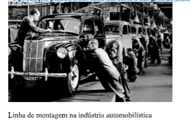

Capítulo 1: Indústria
Questão:A maneira pela qual a humanidade produz, sempre é alvo de pesquisas e questionamentos por parte de diferentes tipos de pesquisadores. Desde o século XVIII, a maneira de produzir mudou, recebeu incrementos tecnológicos e ao invés de desenvolver todo o processo à mão, passamos a utilizar a máquina. Como esse processo afetou e afeta as relações entre as pessoas? E a relação entre as pessoas, o e espaço e a paisagem?
Contextualizando – Indústria Metalúrgica
O que é indústria?
A palavra indústria vem do latim e significa atividade. Indústria é o conjunto de atividades que transformam as matérias-primas em produtos elaborados (bens ou mercadorias).
Para Saber Mais Assista aos vídeos abaixo para compreender a relação entre a indústria e as relações de poder entre regiões e países.
A atividade industrial vem sendo desenvolvida há muitos séculos. Sendo assim, pode ser classificada de acordo com o seu estágio de evolução:
A - INDÚSTRIA MANUAL OU DOMÉSTICA• praticada em ambiente familiar (casa); • uma ou mais pessoas produzem alguns objetos para uso e consumo próprio; • a produção é feita sem nenhuma automação (uso de máquinas)
B - INDÚSTRIA ARTESANAL• representa um modo mais avançado de produção, onde uma ou mais pessoas produzem bens (mercadorias) destinados a um número maior de consumidores (compradores); • exige certa especialização e habilidade pessoal do artesão, que é o responsável por todas as fases de produção; • durante o século XVII a atividade artesanal era feita em oficinas e os artesãos eram ligados às corporações de ofício. Nessas associações de artesãos os mestres (artesãos) controlavam a produção, pois eram donos das ferramentas e das matérias-primas. Hoje, a indústria artesanal evoluiu para técnicas e atividades especializadas; • a produção é limitada e geralmente sob encomenda; • o artesanato também envolve trabalho artístico. Exemplo: joalheria.
C - INDÚSTRIA MANUFATUREIRACom o desenvolvimento do mercado e do capital, a produção da indústria artesanal passou por importantes transformações: • a matéria-prima, as ferramentas e o local de trabalho não pertencem mais ao artesão e sim a empresários (donos do capital); • o trabalho deixou de ser individual e passou a ser coletivo (em grupo); • a divisão do trabalho aumentou a produtividade da indústria por meio da especialização de cada trabalhador numa só etapa da produção. Já não é necessário conhecer todas as etapas de produção como no artesanato.
D - INDÚSTRIA MAQUINOFATUREIRANa 2ª metade do século XVIII, iniciou-se na Inglaterra uma grande transformação na produção industrial: a Revolução Industrial. Nesta época surgiua chamada indústria moderna: • as ferramentas foram substituídas por máquinas; • a energia humana foi substituída pela energia a vapor (máquinas que usavam o carvão como combustível); • os locais de trabalho (as fábricas) passaram a concentrar um grande número de operários; • a divisão do trabalho e a especialização do operário em determinadas fases da produção tornou-se mais intensa; • a produção passou a ser feita em série e em grande escala (grande quantidade).
Quando estudamos em casa, sozinhos ou em grupo, é indispensável ter claro quais são os alvos que queremos alcançar no final da leitura e das atividades propostas. Aprenda a verificar de forma consciente se você conseguiu atingir suas metas.
 A IMPORTÂNCIA DAS INDÚSTRIAS DE BENS DE PRODUÇÃO
A IMPORTÂNCIA DAS INDÚSTRIAS DE BENS DE PRODUÇÃO
Todas as indústrias são importantes para um processo industrial completo, porém, as indústrias de bens de produção são mais importantes, pois sem elas não seria possível a produção dos bens de consumo. Por exemplo: os bens de produção, como as máquinas que fabricam automóveis e o aço que é utilizado no carro, são fundamentais para a indústria automobilística.
A existência das indústrias de bens de produção revela a situação de dependência ou de independência do setor industrial de um país.
Países que não produzem os bens de produção, necessários ao desenvolvimento das indústrias de bens de consumo, precisam importá-los, apresentando assim uma industrialização dependente.
A INDÚSTRIA NO MUNDO - PAÍSES DESENVOLVIDOS
A - REVOLUÇÃO INDUSTRIALRevolução Industrial é o nome dado ao grande desenvolvimento da indústria maquinofatureira ocorrido na Inglaterra no final do século XVIII, período em que grande quantidade de máquinas foi inventada, com destaque para a máquina a vapor utilizado na indústria têxtil (de roupas e tecidos).
A Revolução Industrial provocou o aparecimento das fábricas, das ferrovias e o crescimento das cidades.
No início do século XIX, a indústria já havia se expandido para outros países europeus, principalmente para a Alemanha, França e Bélgica, chegando aos EUA, Rússia, Japão, Austrália e Nova Zelândia no final do século. Até 1870, a Inglaterra era a maior potência industrial do mundo. As características dessa fase de desenvolvimento da indústria foram: • criação e desenvolvimento das máquinas a vapor; • predomínio das indústrias têxteis;
• utilização do carvão como principal fonte de energia; • predomínio de pequenas e médias empresas, típicas do capitalismo concorrencial.
B - SEGUNDA REVOLUÇÃO INDUSTRIALA Segunda Revolução Industrial iniciou-se no final do século XIX e foi caracterizada por: -Invenção dos motores elétricos e de combustão (movidos a combustível); • substituição do carvão pelo petróleo; • importância das indústrias siderúrgicas e metalúrgicas; • expansão das grandes empresas; • substituição gradual do capitalismo competitivo pelo capitalismo monopolista; Ainda nessa fase, no início do século XX, as indústrias automobilísticas e petroquímicas tornam-se símbolos do desenvolvimento industrial. O automóvel tornou-se um símbolo da sociedade de consumo e o petróleo tornou-se a fonte de energia mais importante. A Inglaterra perdeu a posição de maior potência industrial para os Estados Unidos. Surgiram as multinacionais, empresas que possuem um centro de decisões num país (sede) e várias unidades de produção espalhadas por outros países (filiais).
C - REVOLUÇÃO TÉCNICO-CIENTÍFICAA partir da década de 70 iniciou-se uma Revolução Técnico-Científica que vem até os dias atuais, marcando uma nova fase da indústria caracterizada por: • desenvolvimento técnico-científico voltado para a produção de bens de consumo e bens de produção; • desenvolvimento das indústrias de tecnologias complexas: indústria bélica (perdeu importância com o final da Guerra Fria), indústria robótica (produz máquinas-robôs para a automação da indústria), indústria de telecomunicações (desenvolveu as redes de cabos e satélites), indústria de engenharia genética (desenvolve técnicas biológicas para modificar e melhorar características de plantas e animais em criação), indústria de informática(computadores) etc.; • substituição gradual do petróleo por fontes de energias alternativas (biomassa, energia solar, energia das marés etc.).
OS PRINCIPAIS PARQUES INDUSTRIAIS DO MUNDO DESENVOLVIDOA - ESTADOS UNIDOS
Após a 1ª Guerra Mundial, os EUA conquistaram o primeiro lugar entre as nações industrializadas. Os Estados Unidos continuaram crescendo até a década de 70, quando começaram a surgir os primeiros sinais de uma desaceleração econômica, em consequência do rápido crescimento econômico-industrial de outros países, principalmente do Japão e da Alemanha. Apesar disso, o parque industrial norte- americano ainda é o mais potente do mundo. Possui todos os tipos de indústrias e investe muito no desenvolvimento de tecnologias avançadas. A maioria das indústrias dos EUA concentra-se no nordeste do país. Essa área é conhecida como manufacturing belt (cinturão industrial). Nessa região localizam-se a General Motors e a Ford, as duas maiores indústrias automobilísticas do mundo. Os Estados Unidos atingiram a hegemonia econômica mundial a partir do início do século XX, graças ao desenvolvimento da indústria automobilística, que dinamizou dezenas de outros setores industriais. Observe a distribuição das indústrias nos EUA.
B – JAPÃO
O Japão tornou-se um país fortemente industrializado, é atualmente a segunda maior potência industrial do mundo. Os principais fatores do rápido desenvolvimento econômico e industrial do Japão após a Segunda Guerra foram: DISTRIBUIÇÃO DAS INDÚSTRIAS NO EUA Fonte: Boligian, Levon; Boligian, Andressa Turcatel Alves. Geografia: espaço e vivência: volume único: ensino médio. São Paulo: Atual, 2004. • financiamento externo (auxílio de capital vindo de outros países); • elevada poupança interna; • grande quantidade de mão-de-obra barata; • redução quase total dos gastos militares; • financiamentos e subsídios dados pelo Governo, o que ajudou a estimular o desenvolvimento de vários setores industriais; • importação de tecnologia e matérias-primas; • reestruturação e modernização da organização industrial; • produção em larga escala (grande quantidade); • produção voltada para o mercado externo. O Japão possui variados tipos de indústrias, no entanto, especializou-se principalmente em:
• indústrias de construção naval (produz mais de 30% dos navios construídos no mundo);
• indústrias de grande precisão (exatidão) técnica: relógios, máquinas fotográficas, aparelhos,
• indústria de informática; elétricos e eletrônicos;
• indústria de robótica
A área de maior concentração industrial é o eixo Tóquio-Osaka, com 50% do valor da produção do Japão. Estão nesse eixo centros como Nagoya, Kobe, Kioto, Nara e Kamakura. A maioria dos complexos siderúrgicos e petroquímicos está localizada junto aos portos, pois é através deles que o país recebe as matérias-primas que não possui. O Japão importa quase todo o tipo de matéria-prima de que necessita
C – ALEMANHA
O desenvolvimento industrial da Alemanha se parece com o da Inglaterra, pois no primeiro momento da história de sua industrialização o setor têxtil foi o mais importante, evoluindo para a siderurgia, metalurgia, indústria química (Hoeschst, Basf, Bayer etc.), Indústria mecânica, indústria automobilística (Volkswagen, Mercedes Benz, Porsche etc.), entre outros. A Alemanha é hoje a maior potência industrial da Europa e a terceira potência industrial do mundo. Entre os principais centros industriais destaca-se o Vale do Rio Ruhr (onde se localizam importantes reservas minerais como o carvão e o ferro).
PAÍSES EMERGENTES
Na sua maioria, são os países que passaram pelo processo de industrialização tardia e dependente, baseada em capitais e investimentos externos (Banco Mundial), após a década de50 e 60. Este tipo de investimento acaba transformando os países em reféns do FMI (Fundo Monetário Internacional) devido à dívida externa adquirida durante o processo de industrialização.
PAÍSES SUBDESENVOLVIDOS
Os países subdesenvolvidos sempre se caracterizaram pela fraca industrialização. Até os dias atuais, a maioria dos países subdesenvolvidos ainda tem a sua economia baseada na produção de produtos primários como os da agricultura, da pecuária (criação de animais) e do extrativismo (exploração de minerais ou produtos vegetais).


NOVOS PAÍSES INDUSTRIALIZADOS: SUBSTITUIÇÃO DE IMPORTAÇÕES
África do Sul, Argentina, Brasil, Índia e México compartilham do processo conhecido como substituição de importações. Neles entram as empresas multinacionais que fabricam o que consideram msid vantajoso psra ganhar o mercado consumidor.
INDUSTRIALIZAÇÃO NA AMÉRICA LATINA

Quais são os países chamados Tigres Asiáticos e quais as suas características industriais? A partir da década de 70, sob forte influência do Japão e dos EUA, alguns países da Ásia (Coreia do Sul, Formosa ou Taiwan, Hong Kong e Cingapura) iniciaram um processo de rápida industrialização. Esses países ficaram conhecidos como Tigres Asiáticos e sua industrialização caracterizou-se pela: • produção de bens de consumo de baixo investimento tecnológico (roupas, calçados, aparelhos elétricos e sonoros, brinquedos, etc.); • produção voltada para o mercado externo (exportação).
Em 1997, esses países foram abalados por uma crise financeira de dimensões mundiais (que atingiu inclusive o Brasil), provocando a desvalorização das moedas locais, fuga de investidores externos e queda das Bolsas de Valores em todo o mundo.
NOVOS PAÍSES INDUSTRIALIZADOS: PLATAFORMA DE EXPORTAÇÃO
Plataforma de exportação é ou está sendo uma forma de planejar a industrialização tardia capitalista. Foi aplicada pelos países asiáticos como: República Popular da China, Tigres Asiáticos: Cingapura, Hong Kong, Taiwan (Formosa) e Coréia do Sul. Inicialmente e hoje se estende por: Malásia, Tailândia, Filipinas e Indonésia.